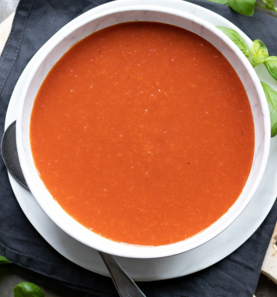

Tomato Soup

Description
A lot of tomatoes turned into a soup!
Ingredients
- 1 tbsp olive oil
- 1 (chopped) onion
- 1 large (peeled & chopped) carrot
- 3 (minced) garlic cloves
- 1 28oz can of crushed tomatoes
- 2 large (diced) tomatoes
- 1 cup vegetable/chicken broth
- 2 tbsp tomato paste
Steps
- Heat olive oil in large pot over medium heat.
- Add onions and sauté for 3 minutes until soft (without letting them brown).
- Add carrots and garlic and sauté for 3 MORE minutes (letting nothing brown).
- Add all tomatoes, broth, tomato paste, and turn heat to high to bring everyhing to a simmer.
- Once simmering, reduce heat to medium-low and let it sit (uncovered) for 20 minutes.
- Use a blender (regular or immersion) to pureé until everything is smooth.